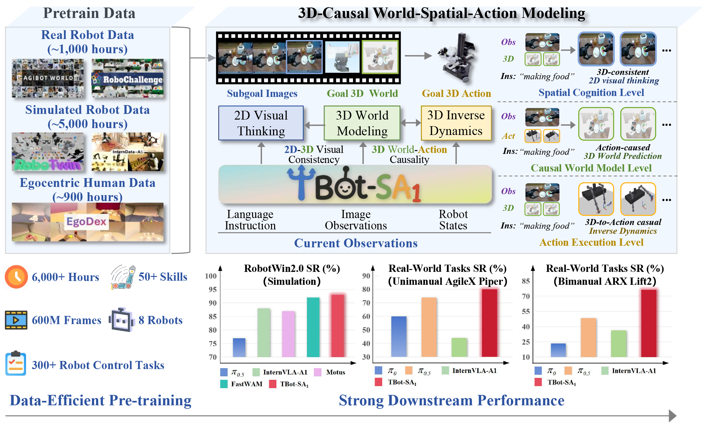
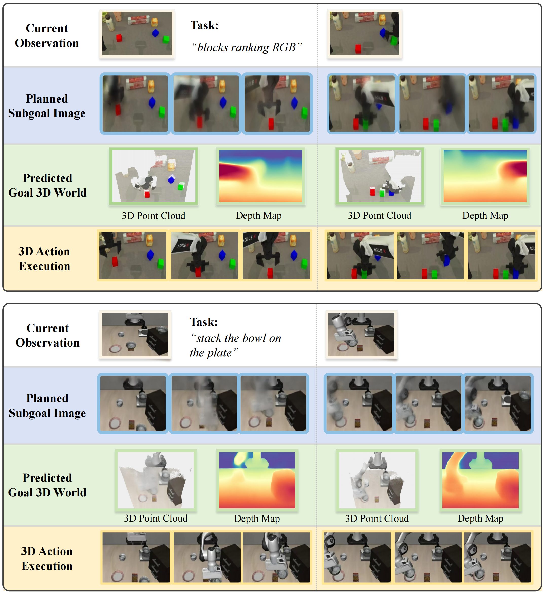

Object Organization
Tidy up the table by sorting the toys, stationery, and trash into their designated containers.
Manuscript, 2026
Overview
TBot-SA1 is a World-Spatial-Action embodied foundation model for generalizable robot control across simulation and real-world manipulation tasks.

Unified WSA Modeling WSA modeling unifies semantic understanding, 3D world modeling, and physical execution.
Bidirectional 3D Causality Learns both action-conditioned scene dynamics and 3D inverse dynamics.
Mixture-of-Transformers Coordinates 2D planning, 3D prediction, and 3D action generation with shared dependency rules.
Data-Efficient Pretraining Pretraining on 6,000 demonstration hours yields strong simulation and real-world manipulation performance.
Superior Performance State-of-the-art results across simulation and real-world robot manipulation tasks, achieved by our open-source model.
TBot-SA1 learns robot control in a shared 2D-3D latent space, unifying instruction-aligned visual planning, action-conditioned 3D world modeling, and 3D-aware action generation.

Existing VLA and WAM policies mainly model 2D semantic-action or 2D video-action causality. World-Spatial-Action (WSA) lifts this process into 3D by jointly learning subgoal visual planning, action-conditioned 3D scene prediction, and 3D inverse dynamics.
This builds a bidirectional world-action loop: robot actions explain how the 3D scene evolves, while the desired 3D scene evolution guides continuous action generation for closed-loop execution.
Performance
In real-world experiments of basic capacity, TBot-SA1 demonstrates strong performance on a series of complex tabletop manipulation tasks, covering single-arm AgileX PiPER and dual-arm ARX Lift2 platforms.
Tidy up the table by sorting the toys, stationery, and trash into their designated containers.
Pick up the trash, hand it over to the other gripper, and place it into the trash bin.
Sweep the trash into the dustpan using a broom.
Position red, green, and blue blocks from left to right in the specified sequence.
Grasp the pencil bag, unzip it, and place it back onto the tabletop.
Pick up toys from the desktop, place them into the toy box, and arrange them neatly inside.
Our fully open-source WSA model TBot-SA1 ranked 4th/100+ teams on the RoboChallenge V2.0 CVPR 2026 Generalist leaderboard (Team: MagicBot), which demonstrates the effectiveness of training a single generalist model across diverse complicated real-world tasks. This indicates that TBot-SA1 is reliable in both custom-designed real-world setups and large-scale real-robot-based benchmarking, demonstrating superior generalizable robot control capabilities.
RoboTwin2.0 benchmark evaluates multi-task generalization in simulation. TBot-SA1 reaches 92.2% on the clean (easy) setting and 92.7% on the randomized (hard) setting, showing stable and robust performance across diverse ALOHA manipulation tasks.
Average success under the clean (easy) setting.
Average success under the randomized (hard) setting.
Manipulation tasks.
| Metric | π0 | π0.5 | ABot-M0 | Motus | InternVLA-A1 | LingBot-VA | Fast-WAM | TBot-SA1 |
|---|---|---|---|---|---|---|---|---|
| Avg. Success (Hard) | 58.40% | 76.76% | 85.08% | 87.02% | 89.64% | 91.50% | 91.78% | 92.70% |
Analysis



Paper
@misc{jiang2026tbotsa1,
title = {TBot-SA1: A 3D-Causal World-Spatial-Action Model for Generalizable Robot Control},
author = {Jiang, Jiahao and Zhang, Jianing and Yin, Zhenhan and Chen, Ruidong and Wang, Sen and Yu, Zhaoshu and Zeng, Pengpeng and Cao, XiaoFeng and Wang, Xuanhan and Song, Jingkuan and Shen, Heng Tao},
year = {2026},
note = {Manuscript}
}